1. Outdoor cables — the investor RGB demo
YOLOv8n, 15 epochs, CPU, 320 px. Classes: break, thunderbolt. Not a home panel. Not thermal.
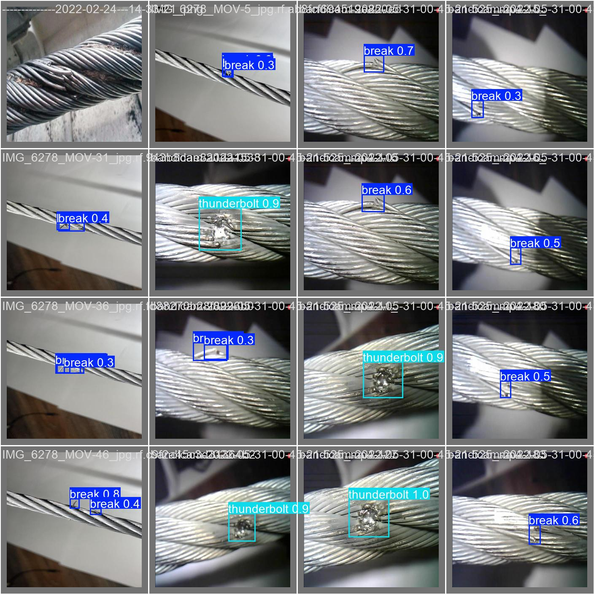
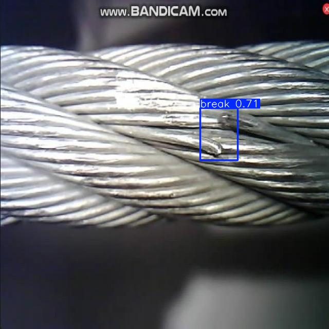
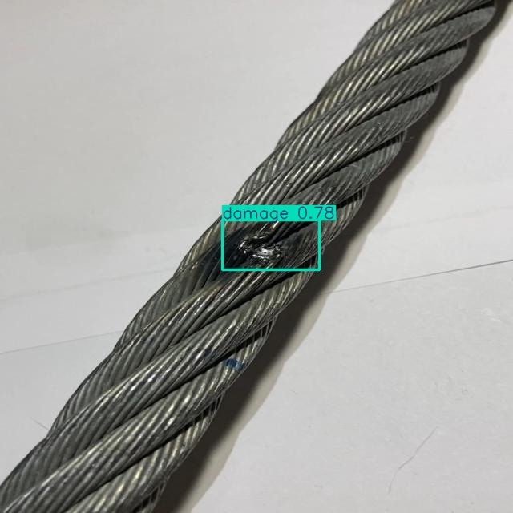
damage).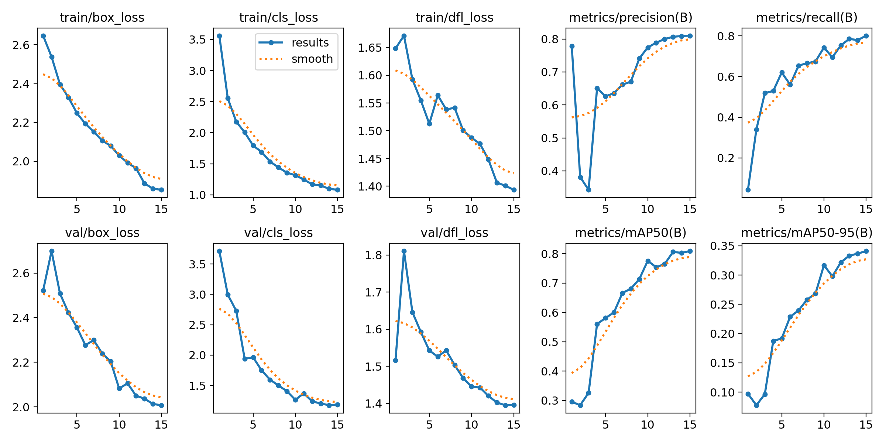
2. Sharpening — original vs processed vs dual merge
Same weights. Left = raw photo + YOLO. Middle = CLAHE / sharpen / tophat + YOLO. Right = keep original boxes, add extras that do not overlap. Do not throw away the raw photo.
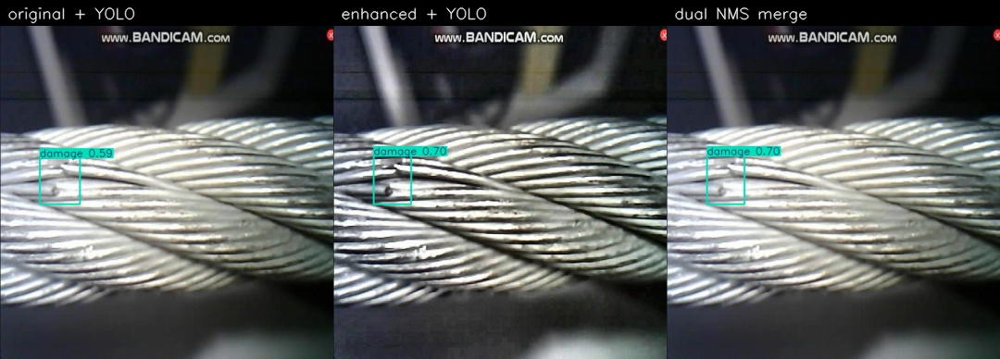
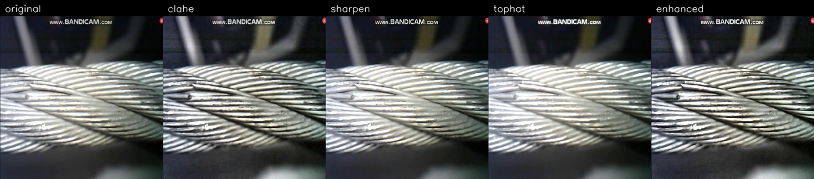
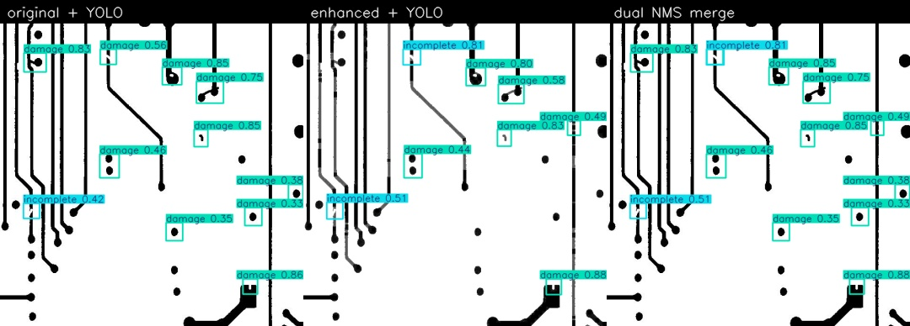
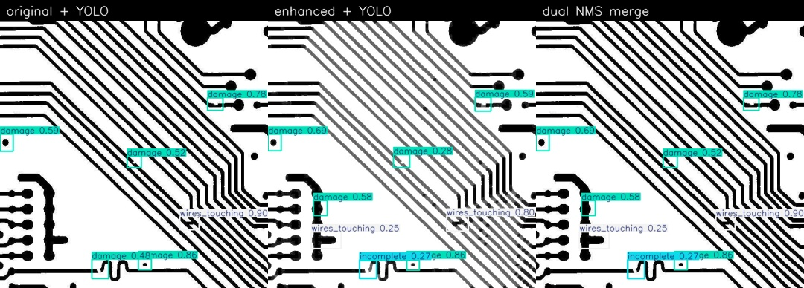
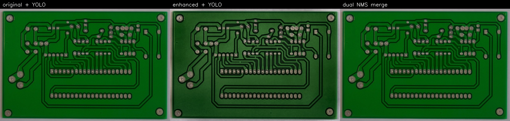
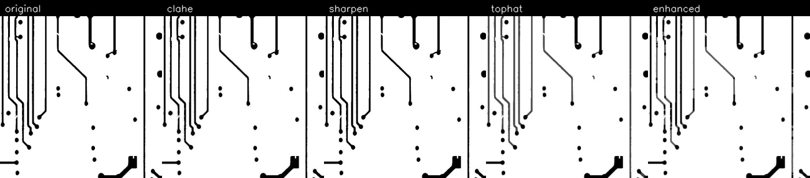
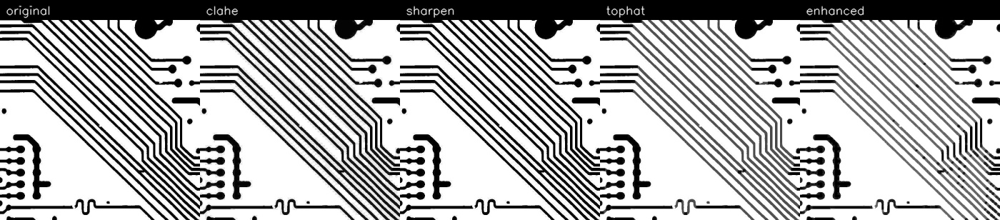
3. Numbers (defect boxes only — ignore “complete”)
| Mode | True defects | False boxes | Precision | Recall |
|---|---|---|---|---|
| Original YOLO | 1254 | 296 | 0.809 | 0.735 |
| Enhanced image only | 1144 | 194 | 0.855 | 0.671 |
| Dual merge (keep original) | 1257 | 342 | 0.786 | 0.737 |
484 test images, IoU 0.5, conf 0.25 on the raw frame and 0.40 on extras. This is not Ultralytics mAP and not field accuracy on a Pakistani consumer unit. Tiled inference at 0.25 precision was 0.12 — not used by default.
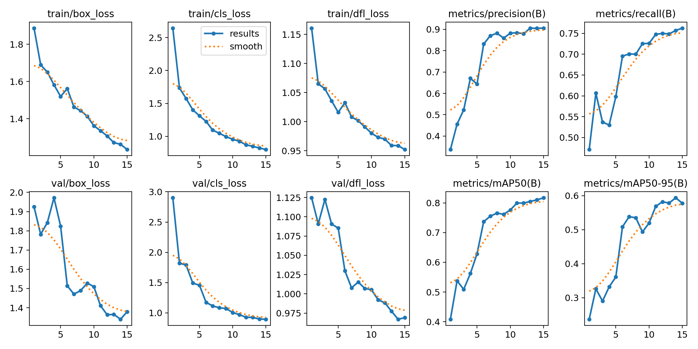
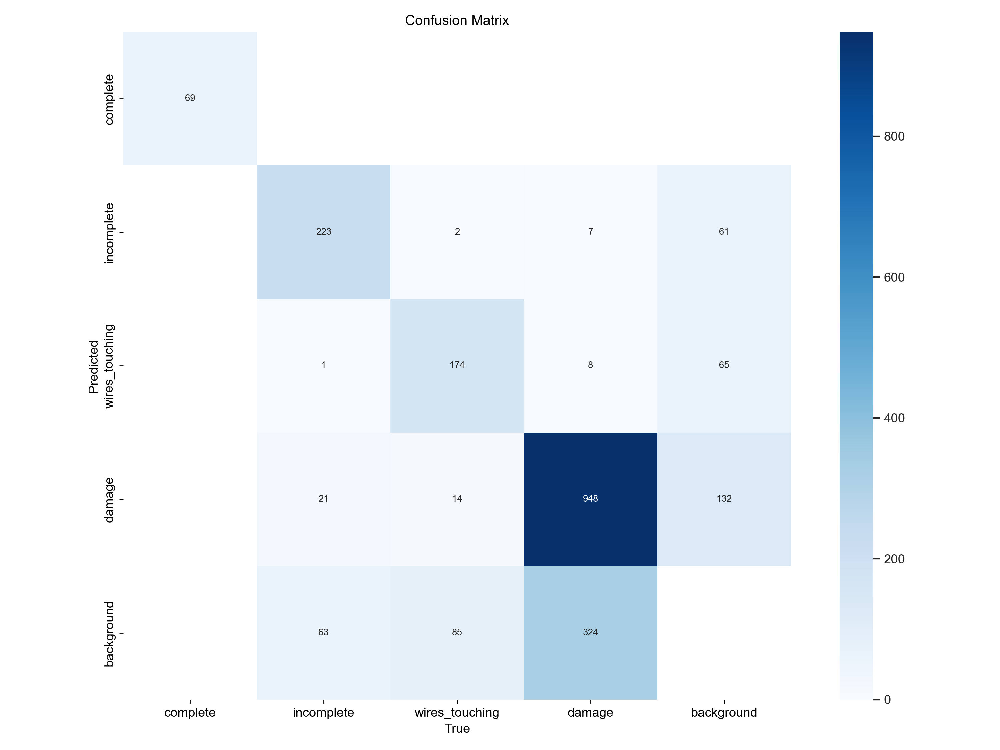
complete class is easy full-crop boxes (mAP50-95 0.995). Product lock: drop it. Box the defect only.4. Why we do not box “complete”
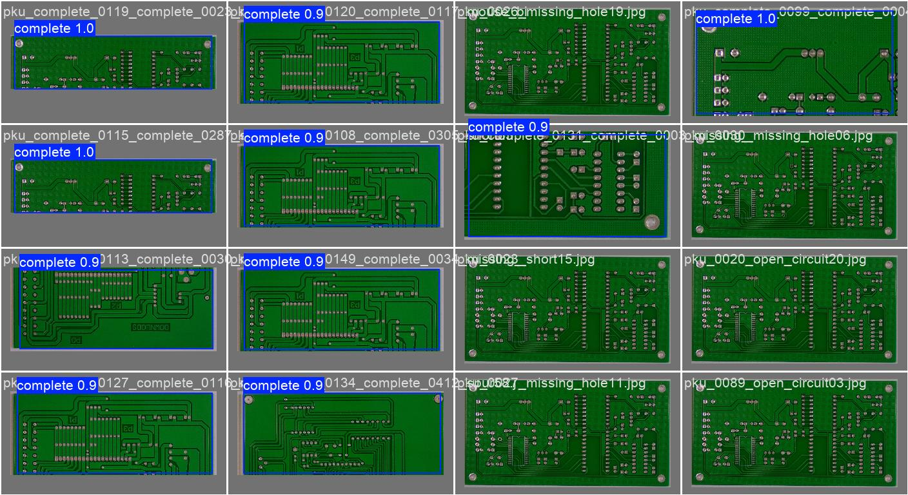
5. Defect-only retrain (open / short / damage)
Fine-tune from circuit_faults.pt, 15 epochs, CPU, 320 px. Dropped complete. Added PCB-IND, stripped-wire close-ups, and unlabeled indoor sockets so a normal wall outlet is not a defect class. Headline mAP is lower than 0.831 because that old score was inflated by easy full-board complete boxes. This is still not a Pakistani consumer-unit or burned-socket model.
| Class | Test mAP50 | Test mAP50-95 |
|---|---|---|
| open | 0.747 | 0.435 |
| short | 0.629 | 0.328 |
| damage | 0.764 | 0.464 |
| all | 0.713 | 0.409 |
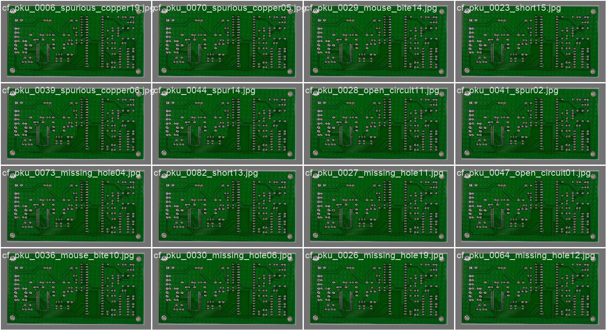
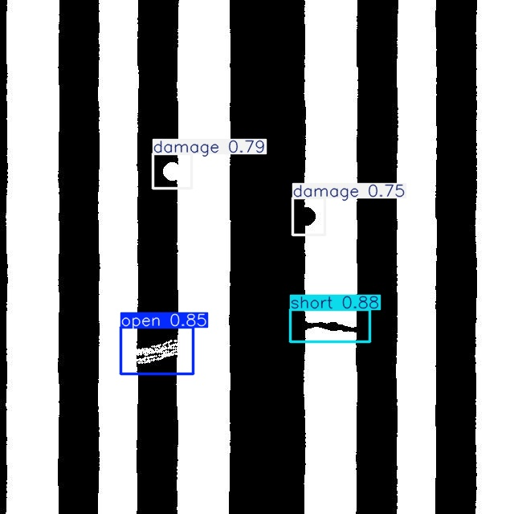
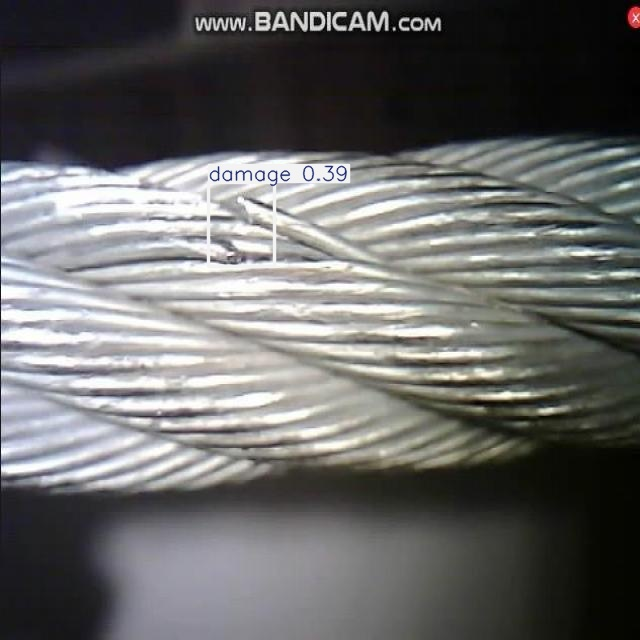
damage).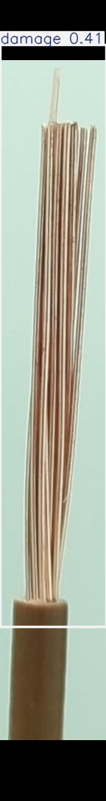
damage.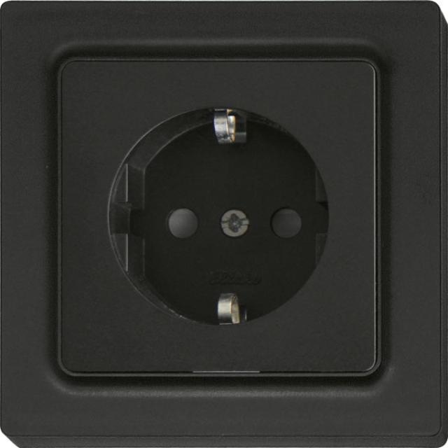
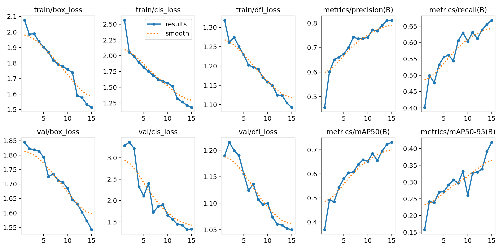
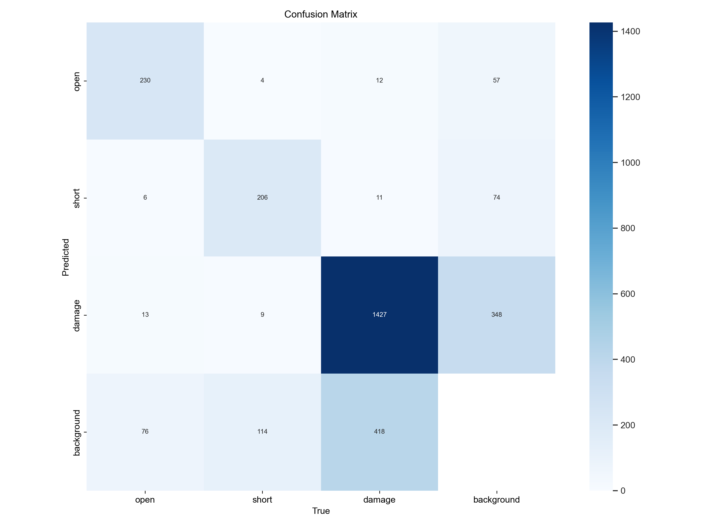
Locked claims
- Screening aid. Never print safe.
- RGB cannot see in-wall faults. Heat needs a radiometric camera under load.
- Do not quote Tao 98.7% or Chen 99% (simulation) as this model’s score.
- Next: HazardDetector if a Roboflow key is available, then own labeled DB photos, then 640 px / GPU.